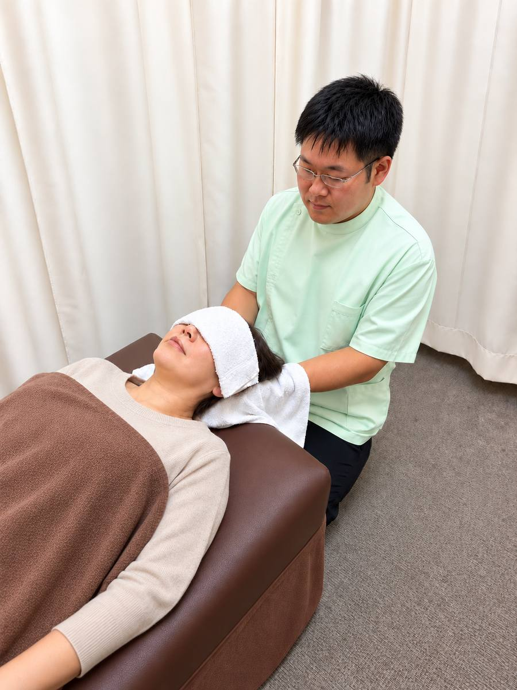

振り向いたときの首の突っ張り、夕方になると重くなる肩。くすの木整骨院(茨木市)には、肩や首の悩みで来院される方が多くいらっしゃいます。まずはご自身の状態に近いものがあるか、ご覧ください。
首は重い頭を支え、肩は腕の動きを支える場所です。うつむいた姿勢や長時間同じ姿勢、急に振り向く動作などは、肩や首まわりに負担がかかる一因になります。肩・首の痛みの背景は一つとは限らず、筋肉や関節の状態、日常の動作などが関わることがあります。
胸の痛みや息苦しさを伴う肩・首の痛みは、当院へのご連絡より先に、すぐに医療機関を受診してください。症状が強い場合や急に悪くなった場合は、ためらわず119番へ。
次にあてはまるときは、当院より先に整形外科などの医療機関の受診をおすすめします。
上の4つで判断に迷う場合は、お電話でご相談ください。状態をうかがったうえでご案内します。
いつから・どの向きに動かすと痛むかを丁寧にうかがいます。
首や肩の動く範囲と姿勢を確認し、痛みの背景を探ります。
状態に合わせて手技などで施術します。
現在の状態と、ご自宅で気をつけていただきたいことをお伝えします。

保険(療養費)の対象となる可能性があるのは、負傷の原因がはっきりしているけが(捻挫・打撲・肉離れなど)です。慢性的な肩こり・首こりや、疲労からくる痛みは対象外となり、自費での施術になります。
急に痛くなった場合でも、負傷の原因によって扱いが変わるため、問診で原因と状態を確認したうえでご案内します。